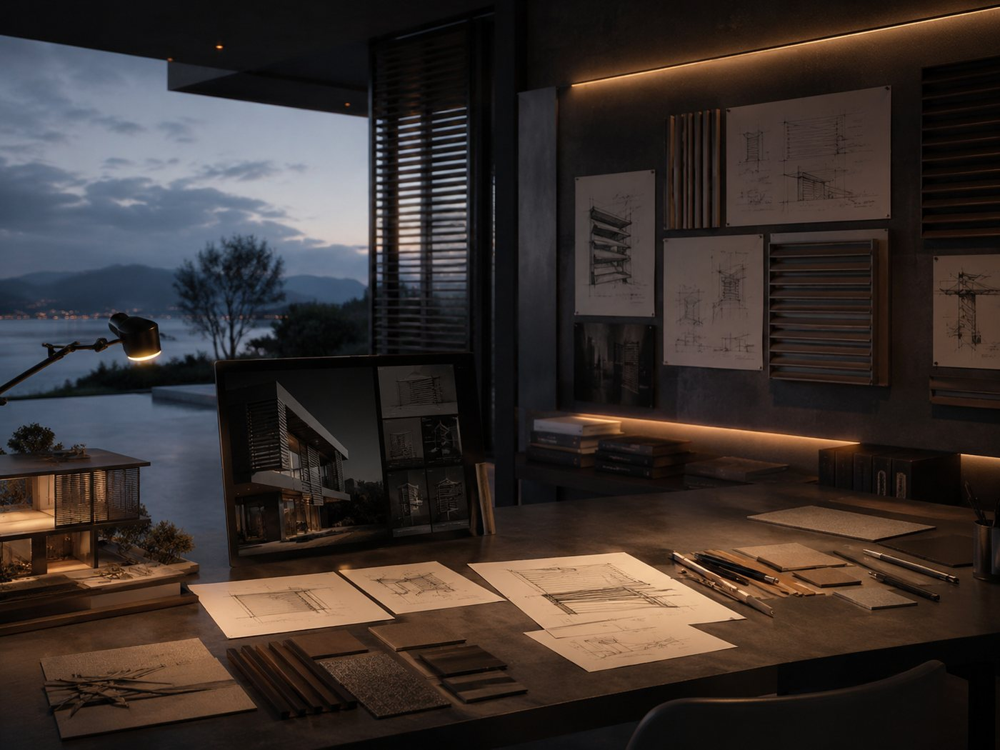

01
Razvoj ideje
Polazište je analiza objekta, željenog vizualnog dojma, sunčeve izloženosti i načina korištenja prostora. Ideja se razvija kroz proporcije, ritam lamela, poziciju vodilica, vrstu ispune i mogućnost izvedbe.